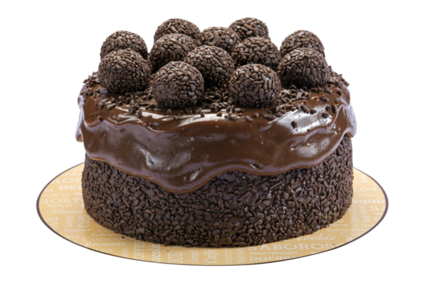
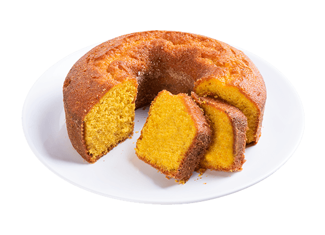

Cardápio
Bolos
Bolo de Chocolate
Ingredientes
- 2 xícaras (chá) de açúcar
- 3 xícaras (chá) de farinha de trigo
- 4 colheres (sopa) de margarina
- 3 ovos
- 1 e 1/2 xícara (chá) de leite
- 1 colher (sopa) bem cheia de fermento em pó
- 1/2 xícara (chá) de Chocolate em pó
- 1 xícara de Leite Condençado
- 1/2 xícara de Creme de Leite
- Granulado de Chocolate
Bolo de Coco
Ingredientes
- 2 xícaras (chá) de açúcar
- 3 xícaras (chá) de farinha de trigo
- 4 colheres (sopa) de margarina
- 3 ovos
- 1 e 1/2 xícara (chá) de leite
- 1 colher (sopa) bem cheia de fermento em pó
- 1 e 1/2 xícara (chá) coco ralado
Bolo de Cenoura
Ingredientes
- 2 xícaras (chá) de açúcar
- 3 xícaras (chá) de farinha de trigo
- 4 colheres (sopa) de margarina
- 3 ovos
- 1 e 1/2 xícara (chá) de leite
- 1 colher (sopa) bem cheia de fermento em pó
- 3 cenouras médias raladas
- 1/2 xícara (chá) de óleo